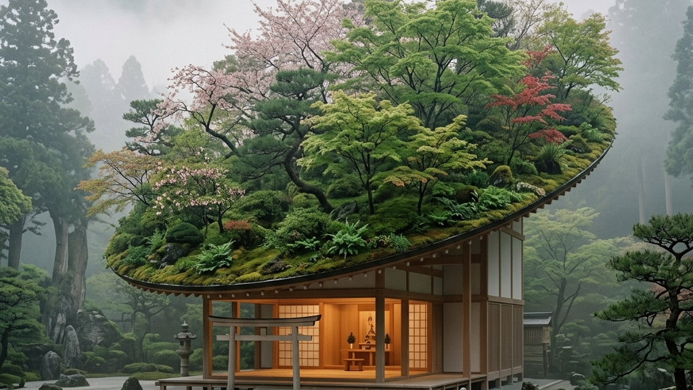

御本殿が124年の眠りにつき、大改修のメスを入れられている間、天神さまのお住まいとして参拝者を迎えていたのが、現代建築家・藤本壮介氏の設計による「仮殿」である。「浮かぶ森」と名付けられたその空間は、伝統的な神社の概念を根底から覆す、あまりにも前衛的で、それでいて静謐な建築だった。
屋根の上には、太宰府天満宮の豊かな自然がそのまま飛翔して留まったかのように、サクラやモミジ、シャクナゲなど数十種類の植物が植えられていた。季節が巡るごとに葉の色は移ろい、天候によってその表情を変える。建築物でありながら、生きた森として呼吸を続けるその姿は、訪れる者の視覚と精神に強烈な余韻を残した。西陣織と引箔──千年の歴史を織り込む静謐なる美学と至高の職人技にも通じる、自然素材の不確実性をあえて取り込み、時間経過をデザインの一部とする日本独自の美意識の極致である。
| 建築の概念 | 西洋的アプローチ | 「仮殿」が示したアプローチ |
|---|---|---|
| 時間に対する態度 | 石やコンクリートによる永遠の固定 | 季節で移ろう植物の受容と有限性 |
| 存在のベクトル | 重力に逆らい天へそびえるモニュメント | 周囲の森と溶け合い、境界を曖昧にする器 |
しかし、この「浮かぶ森」は、御本殿の蘇生が完了した今、解体の運命にある。たった3年間。歴史的なスパンで見れば、ほんの一瞬の瞬きのような時間である。莫大なコストと知恵を注ぎ込んで生み出されたこの奇跡のような空間を、あえて残さずに消し去る。その潔さこそが、このプロジェクトの真の狂気であり、カタルシスなのだ。
私たちは、形あるものを永遠に残そうと執着する。しかし、日本の伝統は「形」への執着を否定する。桜が散るからこそ美しいように、この仮殿もまた、人々の記憶の中にのみ鮮烈に残り、物理的には完全に消滅する道を選んだ。5月19日から始まる解体作業は、単なる撤去工事ではない。それは、一時的に借りていた森を、再び自然へと還す「返却の儀式」なのである。喪失を前提として構築された美学は、永遠を約束されたいかなる建造物よりも深く、私たちの心に突き刺さる。